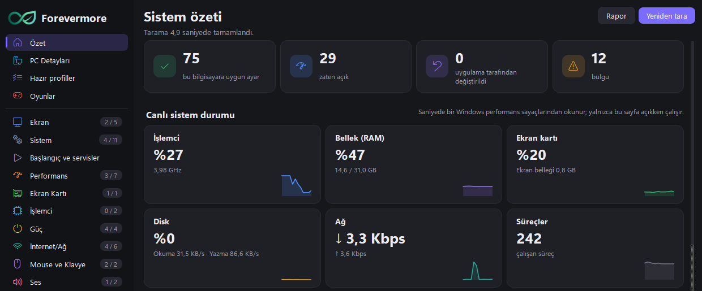
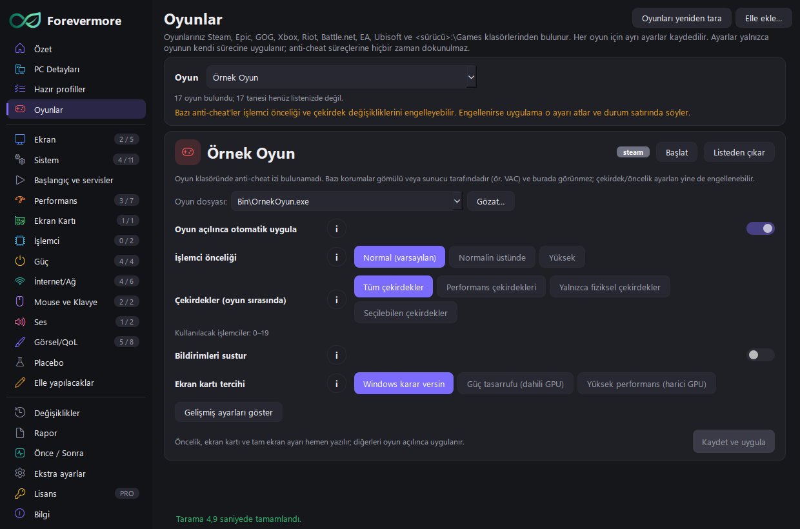
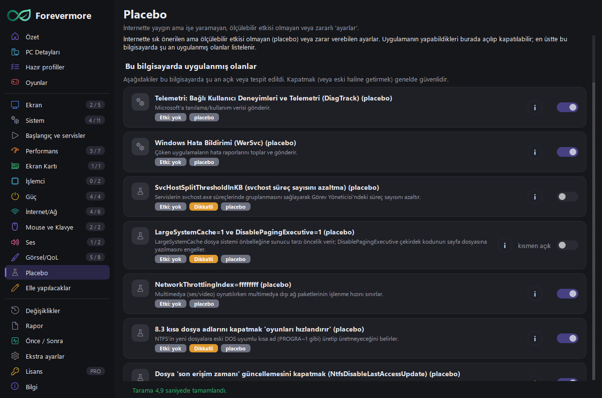

Placebo değil, gerçekten işe yarayan ayarlar.
Forevermore, oyuncular için bir Windows ayar uygulamasıdır. Bilgisayarınızı tarar, her ayarın ne yaptığını artısı ve eksisiyle anlatır, internette dolaşan placebo ve zararlı ayarları ayrıca işaretler. Her değişiklik yedeklenir ve tek tıkla geri alınır.
Windows 10 / 11 · 64 bit · Türkçe ve İngilizce

Neler yapar?
Kendi testlerime, ölçümlerime ve Microsoft, NVIDIA, AMD belgelerine dayanır. Etkisi kanıtlanmamış bir ayara "FPS artırır" denmez.
Tarama ve açıklama
Donanımınızı ve mevcut ayarları salt okuyarak tarar; her ayarın ne yaptığını, kimlerin dokunmaması gerektiğini sade dille yazar.
Placebo ve zararlı ayarlar
"Ping düşürür", "RAM boşaltır" gibi yaygın ama işe yaramayan ya da zarar veren ayarları ayrı gösterir; bilgisayarınızda uygulanmış olanları bulur.
Her şey geri alınabilir
Değişiklikten önce yedek ve geri yükleme noktası alınır. Değişiklikler sayfasından tek tıkla eski hâline dönersiniz.
Ekran kartı ayarları
NVIDIA ve AMD sürücü ayarlarını (gecikme, ölçekleme, G-SYNC) sürücünün kendi arayüzüyle değiştirir.
Oyun profilleriPRO
Oyun başına işlemci önceliği, çekirdek seçimi, bildirimleri susturma; oyun açılınca otomatik uygulanır, kapanınca geri alınır.
Önce / Sonra ölçümüPRO
Ayarlardan önce ve sonra FPS, gecikme ve zamanlayıcı ölçümüyle gerçek etkiyi görürsünüz.


Fiyat
Ücretsiz sürümle başlayın. Pro aylık aboneliktir, her abonelik bir bilgisayarda çalışır ve istediğiniz zaman iptal edilir.
Ücretsiz
- Tarama, PC Detayları ve Rapor
- Tüm ayar açıklamaları ve rehberler
- Aynı anda 5 ayar değişikliği
- Geri alma her zaman serbest
Forevermore Pro
- Sınırsız ayar değişikliği
- Hazır profiller (tek tıkla ayar paketleri)
- Oyun profilleri ve otomatik uygulama
- Önce / Sonra ölçümü
- 1 bilgisayar · istediğiniz zaman iptal
Ödeme, fatura ve vergiler satış ortağımız Lemon Squeezy tarafından işlenir. Abonelik: aboneliği yönet · iade koşulları
İndir ve doğrula
Forevermore'u yalnızca bu siteden indirin. Başka yerden gelen kopyalar değiştirilmiş olabilir.
Zip'i bir klasöre açın, Forevermore.exe'yi çalıştırın. Gerçek kopyada uygulamanın Bilgi sayfası
"Orijinal kopya" yazar ve imza parmak izi şudur: 5FE5-D786-0B89-A56E
Zip'in SHA-256 özeti: —
Sık sorulanlar
Bilgisayarıma zarar verir mi?
Her değişiklikten önce yedek ve Windows geri yükleme noktası alınır; riskli ayarlar iki ayrı uyarıyla sorulur. Değişiklikler sayfasından her şeyi tek tıkla geri alabilirsiniz.
İnternete bağlanır mı, veri toplar mı?
Telemetri yoktur; tarama sonuçları bilgisayarınızdan çıkmaz. Yalnızca Pro lisansı doğrulanırken lisans anahtarı ve bilgisayarın anonim kimliği gönderilir. Ayrıntı: Gizlilik.
Pro'yu kaç bilgisayarda kullanabilirim?
Her abonelik bir bilgisayarda çalışır. Bilgisayar değiştirirken eski bilgisayarda Lisans > "Bu bilgisayardan kaldır" deyip yenisinde anahtarı girmeniz yeterli.
Abonelik bitince ne olur?
Uygulama ücretsiz sürüme döner. Yaptığınız değişiklikler yerinde kalır ve istediğiniz zaman geri alınabilir.
Antivirüs veya Windows SmartScreen uyarı verdi.
Yeni ve imzasız programlarda bu uyarı sık görülür. Dosyanın SHA-256 özetini ve uygulamadaki imza parmak izini yukarıdakilerle karşılaştırın; aynıysa dosya bu siteden çıktığı gibidir.